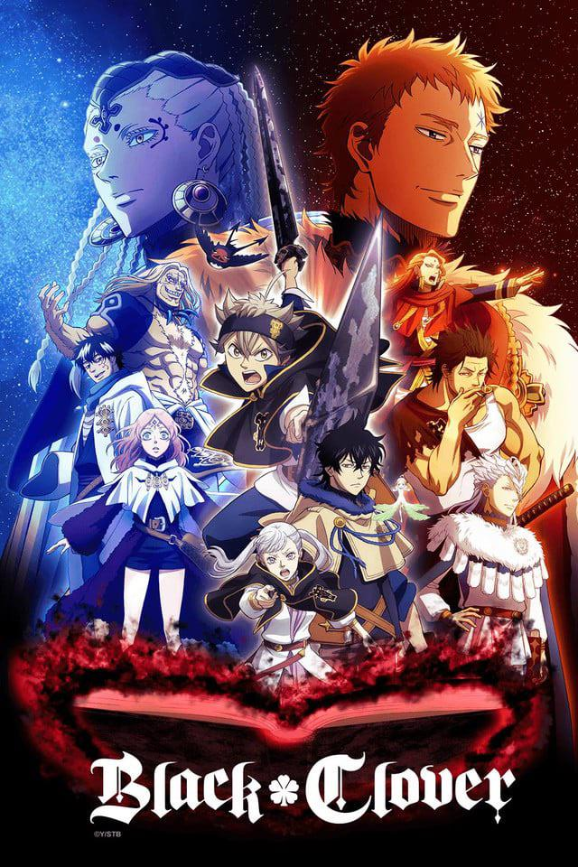
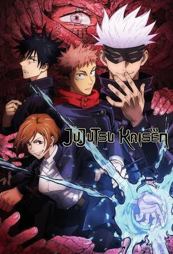
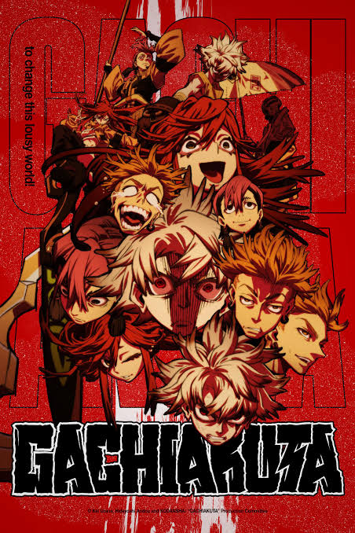
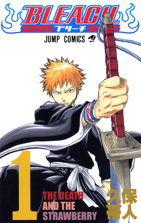
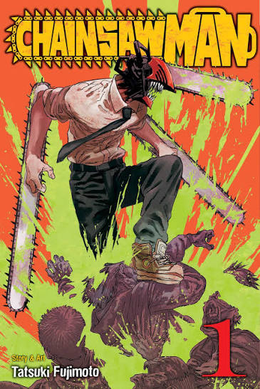

My Anime Collection
This is my curated collection of anime that I really enjoy. Each item here represents something meaningful to me, whether it's a favorite book, game, album, rock, mineral, tool, art, or memory. This collection showcases how responsive design allows me to adapt my content across all screen sizes.

Black Clover
Anime | 2017 | Action | Studio Pierrot
This is my favorite anime of all time. The story of Asta and Yuno's journey to become the next Wizard King is filled with incredible action, emotional moments, and beautiful animation. The character development and world building make this series a true masterpiece.

Jujutsu Kaisen
Anime | 2020 | Action | MAPPA
Jujutsu Kaisen is one of my favorite anime series in recent years. The story follows Yuji Itadori as he is sucked into the world of jujutsu sorcerers after eating a cursed object and being partially possessed by the soul of Sukuna, the King of Curses. The fight scenes and animations are all very well done and its hard not to like the characters.

Gachiakuta
Anime | 2021 | Action | MAPPA
Gachiakuta is one of those anime that I wrote off at first. But once I gave it a shot, I had watched almost every episode in two days. The story follows Rudo who is condemned for a crime he didn't commit and dropped off a cliff where trash is dumped. But he soon finds that there's an entire world dow nthere with trash monsters and people with the ability to turn garbage into weapons. I really like its stylized animation and all of the characters are rather well written. I would definitely recommend this anime.

Demon Slayer
Anime | 2019 | Action | Ufotable
Demon Slayer was the first anime I ever watched with my partner when she started her anime journey. The anime is about Tanjiro Kamado whose family is killed by demons and his sister Nezuko is turned into one. Tanjiro joins the Demon Slayer Corps to help find a way to turn his sister back and prevent other people from suffering the same fate he had. From the beautifully animated fight sequences to the truly tragic and gripping story beats, this is going to be a classic for this generation of anime.

Bleach
Anime | 2004 | Action | Studio Pierrot
As one of the OG anime series in the US, Bleach is a classic that I grew up watching. The story follows Ichigo Kurosaki, a teenager who accidentally obtains the powers of a Soul Reaper and must protect the living world from evil spirits known as Hollows. The series is filled with intense battles, memorable characters, and a rich lore that keeps fans engaged. Even though the anime adaptation had its ups and downs, the manga continues to be a top series in the anime community.

Chainsaw Man
Anime | 2022 | Action | MAPPA
Chainsaw Man is a dark fantasy anime that has taken the anime community by storm. The story follows Denji, a young man who becomes a devil hunter after merging with his pet devil, Pochita. The series is known for its unique blend of horror, action, and dark humor, as well as its complex characters and emotional depth. The animation is top-notch, and the story keeps viewers on the edge of their seats with its unpredictable twists and turns. It's one of those quirkier anime that really got me hooked.